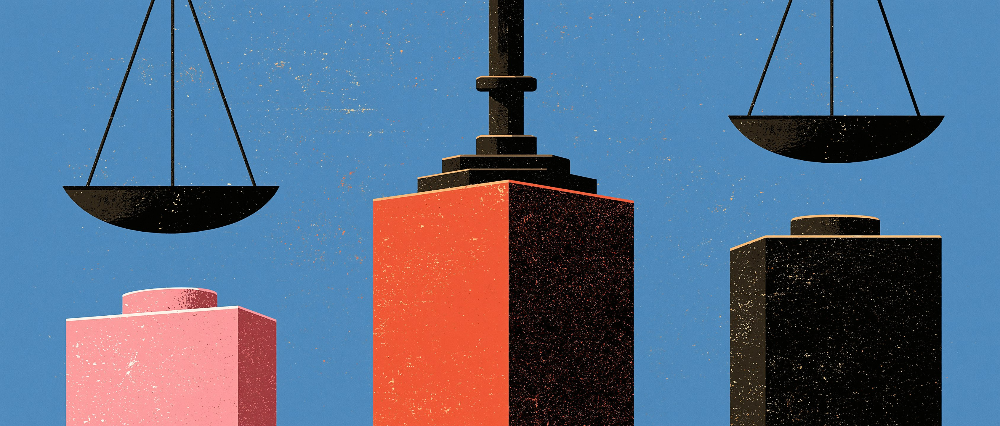
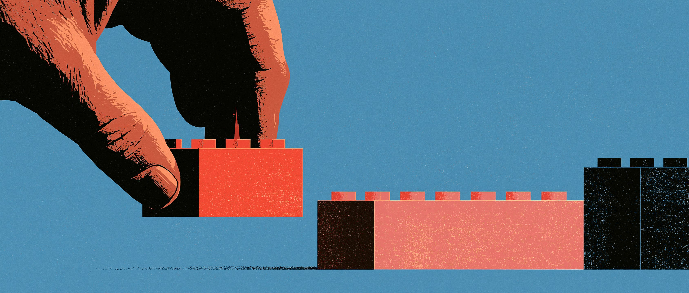
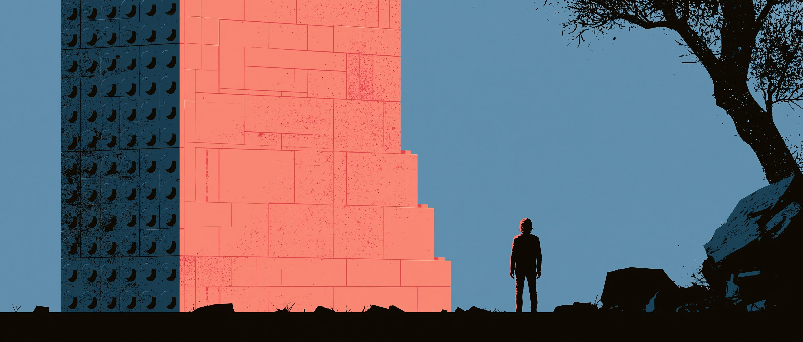

Positive & Negative · Build your grammar block by block! 🧱
B1 Level4 Exercises19 Questions10 Languages
🧱 Building Progress0 / 19
01
// Instrukcja — The Lesson
THE FOUR KEY BRICKS 🧱
Both MUST and HAVE TO mean obligation — something necessary or required. Like a LEGO instruction booklet that tells you which piece goes where! 📖
When a LEGO builder personally feels they must finish the castle before dinner — that's MUST. When the instruction manual says you have to use red bricks for this step — that's HAVE TO.
But the negative forms mean completely different things! This is the most important rule — like mixing up LEGO Technic and Duplo pieces! 😱
💡 WSKAZÓWKA — Key tip for Polish speakers:Must sounds more like "chcę/muszę" from inside you. Have to sounds more like "trzeba/muszę" from outside rules. Both can often translate as "musieć / trzeba" — but the negative forms are TOTALLY different! Read on! 👇
Form A · Positive
MUST ✓
Internal obligation / logical deduction
Subject + MUST + base verb
"I must finish this LEGO set tonight!" 🏰
"That must be the rarest LEGO piece ever."
"You must follow the instructions carefully."
🇵🇱 = musieć / trzeba (wewnętrzne przekonanie)
Form B · Negative
MUSTN'T 🚫
Prohibition — it is FORBIDDEN!
Subject + MUST NOT + base verb
"You mustn't mix up the sorted pieces!" ❌
"Children must not swallow small LEGO bricks."
"You mustn't skip steps in the instruction manual."
🇵🇱 = nie wolno / jest zabronione (Zakaz!)
Form C · Positive
HAVE TO ✓
External obligation — rules, instructions, others
Subject + HAVE TO + base verb
"You have to buy the correct set for the instructions." 📦
"She has to count all the pieces before starting."
"We had to buy new bricks — some were missing."
🇵🇱 = musieć / trzeba (zewnętrzna reguła)
Form D · Negative
DON'T HAVE TO ✅
NO obligation — not necessary, free choice
Subject + DON'T/DOESN'T HAVE TO + base verb
"You don't have to follow the instructions — build freely!" 😄
"She doesn't have to sort every colour separately."
"We didn't have to buy more — we had enough bricks."
🇵🇱 = nie trzeba / nie musisz (brak obowiązku)
⚠ UWAŻAJ! — KEY RULE
🚨 The BIGGEST mistake in English — Don't mix these up!

MUSTN'T = FORBIDDEN 🚫
"You mustn't step on LEGO bricks."
→ It is forbidden. Danger! Ouch! 😫 🇵🇱 = nie wolno (zabronione)
≠
DON'T HAVE TO = NOT NEEDED ✅
"You don't have to step on the bricks."
→ Not required — it's your choice! 😊 🇵🇱 = nie musisz (nie jest konieczne)
"You don't have to use every single brick." → Optional! Build what you want. 😄
🧱 The LEGO Rule — ZAPAMIĘTAJ!MUSTN'T = forbidden, prohibited, don't do it → 🇵🇱 nie wolno / jest zabronione DON'T HAVE TO = not necessary, optional, your choice → 🇵🇱 nie musisz / nie trzeba
Also: MUST has NO past form! Use HAD TO instead.
❌ "Yesterday I must build it." → ✅ "Yesterday I had to build it."
🃏
// Szybki sprawdzian
FLIP THE BRICK! 🧱
👆 Click each brick to reveal the answer — kliknij każdy klocek!
PL → EN
"Nie wolno ci dotykać cudzych klocków."
You MUSTN'T touch others' bricks.
nie wolno = mustn't 🚫
PL → EN
"Nie musisz kupować nowego zestawu."
You DON'T HAVE TO buy a new set.
nie musisz = don't have to ✅
Which form? 🤔
The LEGO instruction says: always use brick type 3001 in step 4.
You HAVE TO use brick 3001.
External rule = have to 📋
Which form? 🧱
It's the last piece in the box — nobody forced you to keep it.
You DIDN'T HAVE TO keep it.
Not necessary = don't have to ✅
Internal or external? 💭
A builder feels a deep personal drive to complete the Eiffel Tower set.
She MUST finish the Eiffel Tower!
Internal conviction = must 💪
3rd person! 👤
"has to" or "have to" with "he"?
HAS TO! (3rd person singular)
He/She/It → HAS TO 😄
🧱
02
// Ćwiczenia — Practice Time
BUILD YOUR SKILLS! 🏗️

01
Fill in the Brick Gap! 📝
Choose: must · mustn't · have to · has to · don't have to · doesn't have to · had to
Question 1 🚫
The LEGO safety guide says: children swallow small bricks — it is extremely dangerous!
💡 Wskazówka: It is forbidden. (zakaz — mustn't)
Question 2 📋
The instruction manual says: you connect the base plate first before adding any other bricks.
💡 Wskazówka: External rule from the manual. (zewnętrzna zasada)
Question 3 😊
The shop assistant said: "You follow the instructions — you can build whatever you like!"
💡 Wskazówka: It's optional — not required. (nie jest konieczne)
Question 4 💪
The young builder thinks: "I complete the Millennium Falcon before my birthday — I feel it!" 🚀
💡 Wskazówka: Deep personal conviction — from inside. (wewnętrzne przekonanie)
Question 5 🌟
A master LEGO builder use official sets — she designs her own creations from scratch.
💡 Wskazówka: 3rd person (she), not necessary. (nie musi — 3. osoba)
Question 6 ⏮️
Last week, we go to three shops before finding the right LEGO Technic set!
💡 Wskazówka: Past tense! MUST has no past — use HAD TO. 🇵🇱 (musieliśmy)
02
Which Brick Fits? 🧠
Select the correct option — only one chance!
Question 1 🧱
"You mustn't force LEGO bricks together." — What does this mean?
Question 2 😄
"You don't have to sort your bricks by colour." — What does this mean?
Question 3 📖
The official LEGO instruction booklet says you need to use baseplate 3811 in step 1. Which fits BEST?
Question 4 💭
A LEGO fan has a strong personal dream to build every modular building set. Which fits BEST?
Question 5 ✏️
Which sentence is grammatically CORRECT?
03
Assemble the Sentence! 🏗️ Trudne!
Click bricks in order — click a placed brick to remove it.
Question 1 🚫
Make a sentence: "It is forbidden for children to put bricks in their mouth."
Click bricks above to assemble the sentence... 🧱
Question 2 ❓
Make a question: "Is it necessary for her to count all the pieces?"
Click bricks above to assemble the question... 🧱
Question 3 ⏮️
Make a sentence: "It wasn't necessary for us to buy more bricks." (past)
Click bricks above to assemble the sentence... 🧱
04
Find the Wrong Brick! 🔍 Trudne!
Each sentence has ONE mistake. Type only the corrected word(s).
Question 1 ✏️
❌ "You must not to force the bricks together — you will break them."
💡 Type the corrected phrase (replacing "must not to force"):
Question 2 ✏️
❌ "Does she musts follow the instruction booklet?"
💡 Type the correct modal verb to replace "musts":
Question 3 ✏️
❌ "Last summer, we must drive to Warsaw to find the limited-edition LEGO set."
💡 Past tense! MUST has no past form — use HAD TO:
Question 4 ✏️
❌ "You mustn't buy extra bricks — we already have enough, it's completely your choice."
💡 The meaning is "not required / not necessary." Which form is correct?
🧱 Build Complete!
0
out of0bricks
🧱
03
// Ściągawka — Summary
YOUR LEGO GRAMMAR GUIDE 📖

💪 MUST (positive)
Strong personal obligation / logical deduction "I must finish this set tonight!"
🇵🇱 musieć / wewnętrzne przekonanie
🚫 MUSTN'T (negative)
FORBIDDEN — prohibited, don't do it! "You mustn't swallow small bricks."
🇵🇱 nie wolno / jest zabronione
📋 HAVE TO (positive)
External obligation — rules, instructions "You have to use the baseplate first."
🇵🇱 trzeba / zewnętrzna zasada
✅ DON'T HAVE TO (negative)
NOT necessary — optional, your choice "You don't have to sort by colour."
🇵🇱 nie trzeba / nie jest konieczne
🧱 THE GOLDEN BRICK RULE — ZŁOTA ZASADA:"You mustn't force the bricks together." → It will break them. FORBIDDEN! 🚫
"You don't have to force them together." → It's optional. Use the right-sized bricks. ✅
One destroys your LEGO set. The other is just a building tip. 🧱 Know the difference!
⏮ And remember: HAD TO = past tense of MUST and HAVE TO.
❌ "Yesterday I must build it." → ✅ "Yesterday I had to build it." 🇵🇱 (musiałem)